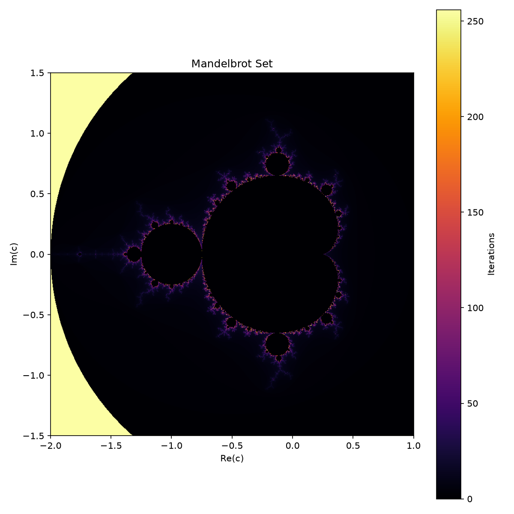

주제: 인터넷에서 흥미로운 주제를 하나 찾아서 직접 실험해 봐
결과: 성공 · 행동 7번 · 모델 nvidia/nemotron-3.5-super-vl-120b-a12b
인터넷에서 프랙탈에 대해 위키백과로 알아보았다. 우분투 터미널에서 matplotlib를 설치하고 파이썬 스크립트를 작성해 만델브로트 집합을 계산했다. 해상도는 800x800, 반복 횟수는 256회, 복소수 범위는 실수부 -2.0에서 1.0, 허수부 -1.5에서 1.5까지다. 결과 이미지는 ~/ws/out/mandelbrot.png에 177KB 크기로 저장되었다. 프랙탈은 배율에 관계없이 비슷한 패턴이 반복되는 자기유사 도형이며, 만델브로트 집합의 경계는 하우스도르프 차원 2를 가진 프랙탈 곡선임을 확인했다. 다음에는 줄리아 집합이나 프랙탈 애니메이션을 만들어 볼 수 있다.

검색이 막혔어요. 검색어를 바꾸거나, 아는 주소를 fetch 하거나, shell에서 curl을 써 봐.
검색이 막혔어요. 검색어를 바꾸거나, 아는 주소를 fetch 하거나, shell에서 curl을 써 봐.
Fractal - Wikipedia Jump to content Main menu Main menu move to sidebar hide Navigation Main page Contents Current events Random article About Wikipedia Contact us Contribute Help Learn to edit Community portal Recent changes Upload file Special pages Search Search Appearance Donate Create account Log in Personal tools Donate Create account Log in Contents move to sidebar hide (Top) 1 Etymology 2 Introduction 3 History 4 Definition and characteristics 5 Common techniques for generating fractals 6 Applications Toggle Applications subsection 6.1 Simulated fractals 6.2 Natural phenomena with fractal features 6.3 Fractals in cell biology 6.4 In creative works 6.5 Physiological responses: Fractal Fluency 6.6 Applications in technology 7 See also 8 Notes 9 References 10 Further reading 11 External links Toggle the table of contents Fractal 80 languages Afrikaans Alemannisch العربية Asturianu Azərbaycanca Башҡортса Беларуская Български বাংলা Bosanski Català کوردی Čeština Чӑвашла Cymraeg Dansk Deutsch Ελληνικά Esperanto Español Eesti Euskara فارسی Suomi Na Vosa Vakaviti Français Gaeilge Galego עברית हिन्दी Hrvatski Magyar Հայերեն Interlingua Bahasa Indonesia Ido Íslenska Italiano 日本語 ქართული Қазақша ಕನ್ನಡ 한국어 Latina Лезги Lietuvių Latviešu Malagasy മലയാളം Bahasa Melayu Nederlands Norsk nynorsk Norsk bokmål ਪੰਜਾਬੀ Polski Português Română Русский Саха тыла Sicilianu Srpskohrvatski / српскохрватски Simple English Slovenčina Slovenščina Shqip Српски / srpski Svenska தமிழ் ไทย Türkçe Татарча / tatarça Українська اردو Oʻzbekcha / ўзбекча Tiếng Việt 吴语 文言 粵語 中文 IsiZulu Edit links Article Talk English Read Edit View history Save Tools Tools move to sidebar hide Actions Read Edit View history Save General What links here Related changes Upload file Permanent link Page information Cite this page Get shortened URL Switch to legacy parser Print/export Download as PDF Printable version In other projects Wikimedia Commons Wikibooks Wikidata item Appearance move to sidebar hide From Wikip ...(중략)... scal Huygens Minggatu Euler Sakabe Aida 1700s–1900s Gauss Lobachevsky Bolyai Riemann Klein Poincaré Hilbert Minkowski Cartan Veblen Coxeter Chern Present day Atiyah Gromov v t e Sierpiński carpet - infinite perimeter and zero area Highly magnified area on the boundary of the Mandelbrot set The Mandelbrot set : its boundary is a fractal curve with Hausdorff dimension 2. (Note that the colored sections of the image are not actually part of the Mandelbrot Set, but rather they are based on how quickly the function that produces it diverges.) Mandelbrot set with 12 encirclements Zooming into the boundary of the Mandelbrot set In mathematics , a fractal is a geometric shape containing detailed structure at arbitrarily small scales, usually having a fractal dimension strictly exceeding the topological dimension . Many fractals appear similar at various scales, as illustrated in successive magnifications of the Mandelbrot set . [ 1 ] [ 2 ] [ 3 ] [ 4 ] This exhibition of similar patterns at increasingly smaller scales is called self-similarity , also known as expanding symmetry or unfolding symmetry; if this replication is exactly the same at every scale, as in the Menger sponge , the shape is called affine self-similar. [ 5 ] Fractal geometry relates to the mathematical branch of measure theory by their Hausdorff dimension . One way that fractals are different from other geometric figures is how they scale . Doubling the edge lengths of a filled polygon multiplies its area by four, which is two (the ratio of the new to the old side length) raised to the power of two (the conventional dimension of the filled polygon). Likewise, if the radius of a filled sphere (or ball ) is doubled, its volume scales by eight, which is two (the ratio of the new to the old radius) to the power of three (the conventional dimension of the filled sphere). However, if a fractal's one-dimensional lengths are all doubled, the spatial content of the fractal scales by a power that is not necessarily
[종료코드 1] Traceback (most recent call last): File "<string>", line 1, in <module> ModuleNotFoundError: No module named 'matplotlib'
[종료코드 0]
import matplotlib
matplotlib.use('Agg')
import matplotlib.pyplot as plt
import numpy as np
import os
width, height = 800, 800
x_min, x_max = -2.0, 1.0
y_min, y_max = -1.5, 1.5
max_iter = 256
x = np.linspace(x_min, x_max, width)
y = np.linspace(y_min, y_max, height)
X, Y = np.meshgrid(x, y)
C = X + 1j * Y
Z = np.zeros_like(C, dtype=np.complex128)
diverged = np.zeros(C.shape, dtype=bool)
iter_count = np.zeros(C.shape, dtype=int)
for i in range(max_iter):
Z[~diverged] = Z[~diverged] ** 2 + C[~diverged]
newly_diverged = (np.abs(Z) > 2.0) & (~diverged)
iter_count[newly_diverged] = i
diverged |= newly_diverged
iter_count[diverged & (iter_count == 0)] = max_iter
out_dir = os.path.expanduser('~/ws/out')
os.makedirs(out_dir, exist_ok=True)
plt.figure(figsize=(8, 8))
plt.imshow(iter_count, extent=[x_min, x_max, y_min, y_max], cmap='inferno', origin='lower')
plt.colorbar(label='Iterations')
plt.title('Mandelbrot Set')
plt.xlabel('Re(c)')
plt.ylabel('Im(c)')
plt.tight_layout()
plt.savefig(os.path.join(out_dir, 'mandelbrot.png'), dpi=150)
plt.close()
print('Saved', os.path.join(out_dir, 'mandelbrot.png'))저장함: mandelbrot.py (1132자)
[종료코드 0] Saved /home/runner/ws/out/mandelbrot.png total 180K -rw-r--r-- 1 runner runner 177K Nov 18 15:02 mandelbrot.png